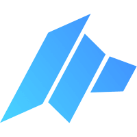

01
Stake DAO tokens to reach a tier
Buy and stake DAO tokens on the DAO Maker platform to qualify for SHO participation. The amount staked determines your tier, which determines the size of allocation you can apply for in each SHO.

The complete guide to DAO Maker — one of crypto's most established retail-focused launchpad platforms enabling everyday investors to access early-stage token sales through Strong HODLer Offerings (SHOs). Understand how SHO allocation tiers work, how to stake DAO tokens to qualify, what makes DAO Maker's model different from other IDO launchpads, how MAHA governance fits in, and how to evaluate projects and protect yourself from launchpad scams and low-quality offerings.
Buy and stake DAO tokens on the DAO Maker platform to qualify for SHO participation. The amount staked determines your tier, which determines the size of allocation you can apply for in each SHO.
When a new SHO launches, eligible stakers apply during the registration window. A lottery or guaranteed allocation system — depending on your tier — determines who receives tokens and how many.
Successful applicants invest a fixed USDC or USDT amount in exchange for project tokens at the SHO (pre-listing) price — typically significantly below the anticipated open market price at TGE.
Purchased tokens are released over a vesting schedule — typically an initial unlock at TGE (Token Generation Event) followed by monthly cliff releases over 3–18 months depending on the project terms.
DAO Maker is a Web3 growth technology company and launchpad platform that pioneered the concept of retail-accessible early-stage token sales. Founded in 2018, it introduced the Strong HODLer Offering (SHO) model — a structured system designed to give long-term DAO token holders priority access to project launches, while rewarding commitment over short-term speculation.
Unlike typical IDO platforms where anyone with a wallet can participate regardless of long-term commitment, DAO Maker's tier system explicitly rewards holders who stake larger amounts of DAO for longer periods — aligning platform participants with the interests of the projects being launched.
The SHO model with tiered staking, investor protection features (refund mechanisms on certain offerings), and a focus on vetted projects with post-launch support distinguish it from simpler IDO platforms.
Retail crypto investors seeking early-stage project exposure, DeFi and Web3 project teams looking for a launch partner with community reach, and experienced launchpad participants building diversified early-stage portfolios.
The Strong HODLer Offering (SHO) is DAO Maker's signature sale format. The name reflects the core design principle: priority access goes to strong holders of DAO who demonstrate long-term commitment by staking significant amounts of the platform token.
| Phase | What happens | Timeframe |
|---|---|---|
| Registration window | Eligible stakers register interest in the SHO during an announced window | Usually 24–72 hours |
| Allocation determination | Guaranteed or lottery allocation assigned based on tier — higher tiers guaranteed, lower tiers lottery-based | After registration closes |
| Investment window | Successful participants send USDC/USDT to receive their token allocation | 24–48 hours after allocation |
| TGE (Token Generation Event) | Project token launches — initial unlock percentage distributed to investors | Per project schedule |
| Vesting releases | Remaining tokens unlock on a monthly cliff schedule over the vesting period | Monthly over 3–18 months |
DAO Maker uses a tiered staking system — the more DAO tokens you stake on the platform, the higher your tier, and the larger and more guaranteed your SHO allocations become. Lower tiers participate via lottery; higher tiers receive guaranteed spots.
Lottery-based allocation. Chance of winning depends on total participants at this tier. Smallest allocation size if selected.
Higher lottery win probability than Tier 1. Improved allocation size. Better odds across most SHOs due to smaller participant pool.
Guaranteed allocation in most SHOs. Significantly larger investment amount. Consistent access without lottery risk at this level.
Guaranteed allocation across all SHOs with maximum allocation size. Priority access and additional perks for the highest committed platform participants.
Highest allocation amounts, additional governance rights, and potential for private round access alongside the public SHO. Top-tier commitment and reward level.
The DAO token is the central utility asset of the DAO Maker ecosystem. Its primary function is gating access to SHO allocations — but it also plays governance and value-accrual roles within the platform.
Staking DAO tokens is the prerequisite for any SHO participation. Without staked DAO, no allocation is possible regardless of how many USDC you're willing to invest. The staked amount directly determines your tier and allocation size.
DAO holders participate in governance votes on platform direction, new feature prioritisation, listing criteria, and treasury management — giving long-term holders a voice in how the platform evolves.
DAO stakers may earn staking rewards from platform fee revenue in addition to SHO access rights. Reward rates depend on total staked supply and platform revenue performance.
DAO token demand is directly tied to platform activity — more popular SHOs create more buying pressure from participants wanting to reach higher tiers. This links token price to platform success.
MAHA is a governance token within the DAO Maker ecosystem, designed to complement the DAO token by providing a dedicated governance layer for platform decisions. While DAO is the primary utility and staking token, MAHA holders participate in specific governance processes related to platform development priorities and treasury allocation.
Every SHO has a project-specific vesting schedule. Understanding vesting before investing is essential — it determines when and how much of your purchased tokens become liquid.
| Vesting type | How it works | Implication for investors |
|---|---|---|
| TGE unlock only | 100% of tokens released at Token Generation Event | Immediate liquidity — but often lowest-quality projects offer this to attract participation |
| TGE + linear vesting | e.g. 20% at TGE, remaining 80% unlocked monthly over 12 months | Partial immediate liquidity; forces long-term holding for most of the position |
| Cliff + linear vesting | 0% at TGE, 100% unlock begins after a cliff (e.g. 3 months), then monthly | No immediate liquidity — full commitment required; tests genuine belief in the project |
| Long vesting (18+ months) | Small TGE unlock, very gradual monthly releases over 18–24 months | Capital locked for a long time — requires high conviction and liquidity planning |
DAO Maker vets projects before listing them as SHOs — but "vetted by a launchpad" is not the same as "safe investment." Every SHO requires your own independent research.
| Risk / Scam type | How it works | Protection |
|---|---|---|
| Phishing sites mimicking DAO Maker | Fake UI asks wallet connection or seed phrase to "register for SHO" | Bookmark official URL — verify domain every session |
| Fake SHO announcements on social media | Scammers announce fake SHOs via Twitter/Telegram with malicious links | Only trust SHO announcements from official DAO Maker channels |
| Project token collapse post-TGE | SHO project lists at high FDV, early investors sell, token crashes during vesting | Due diligence on FDV and vesting; size positions conservatively |
| DAO token price risk | DAO token drops significantly, reducing the USD value of your staked collateral | Staking DAO requires accepting DAO price exposure on top of SHO risk |
| Smart-contract exploit (platform) | Staked DAO or invested funds at risk from protocol-level vulnerabilities | DAO Maker has been exploited historically — size positions accordingly |
| Impersonation support scams | "DAO Maker support" DMs claiming to help with failed allocations in exchange for wallet access | Official support never DMs first — report and block impersonators |
| Feature | DAO Maker | Polkastarter | GameFi | Seedify |
|---|---|---|---|---|
| Sale format | SHO (tiered staking) | POLS staking lottery | GAFI staking tiers | SFUND staking tiers |
| Category focus | Multi-category Web3 | Multi-chain DeFi/NFT | GameFi & Metaverse | GameFi & Web3 games |
| Investor protection | Refund mechanisms (select SHOs) | Standard IDO terms | Standard IDO terms | Standard IDO terms |
| Platform track record | Since 2018 — long history | Since 2020 | Newer | Since 2021 |
| Access model | Tiered staking — lottery at low tiers | POLS lottery / guaranteed | Tiered staking | Tiered staking |
| Chain focus | Multi-chain | Multi-chain (Ethereum focus) | BNB Chain focus | BNB Chain focus |
DAO Maker is a Web3 launchpad and growth platform that gives retail investors access to early-stage token sales. A SHO (Strong HODLer Offering) is DAO Maker's primary sale format — a structured token offering where eligibility and allocation size are determined by how many DAO tokens you've staked on the platform. Higher stakes = higher tier = larger guaranteed allocations in new project launches.
You need to stake DAO tokens on the DAO Maker platform to reach one of the tier levels. Once staked, you're eligible to register for upcoming SHOs during the registration window. Lower tiers participate via lottery; higher tiers receive guaranteed allocations. The exact amount of DAO required per tier changes over time — check the official DAO Maker platform for current tier thresholds.
The DAO token is the primary utility and staking token — you need it to qualify for SHO allocations, and staking it determines your tier and access level. MAHA is a governance token within the ecosystem used for participating in specific platform governance decisions. For most SHO participants, the DAO token is the key asset; MAHA is for those who want to actively participate in governance processes.
Yes — significantly. Early-stage token investments are high-risk. Most tokens launched on any launchpad decline substantially from their initial listing price over time. You face multiple layers of risk: the SHO project token may lose value during or after vesting, the DAO token you staked for access may also decline, and platform-level smart-contract risks exist. Treat launchpad investments as speculative, high-risk capital only.
Vesting is the schedule by which your purchased SHO tokens are released to you over time. Typically you receive a small percentage at TGE (Token Generation Event) and the rest unlocks monthly over 3–18 months. Vesting matters because if the token price collapses after TGE — which is common — you remain locked into the position for months, unable to exit the remaining allocation. Model worst-case vesting scenarios before investing.
Some DAO Maker SHOs include investor protection in the form of partial refund mechanisms — if a project's token drops below a certain price threshold post-TGE, investors may be eligible to return unlocked tokens in exchange for a portion of their original investment back. Not all SHOs include this feature, and the specific terms vary per offering. Check each SHO's terms carefully before participating to understand whether protection applies.
DAO Maker experienced a significant smart-contract exploit in 2021. The team subsequently improved security protocols and compensated affected users. The platform has continued operating since then. However, no platform can claim a zero-risk profile, and this history is relevant context. Size your positions to reflect the platform risk in addition to project-level risk, and use a hardware wallet for significant holdings.
Guaranteed allocation starts at Tier 3 (Gold) and above. The exact DAO token amount required changes over time based on DAO token price and governance decisions. Check the official DAO Maker platform for current tier thresholds — any specific number in a guide may be outdated. Calculate the USD cost of reaching a guaranteed tier at current DAO prices before making staking decisions.
DAO staking terms include an unstaking period — your tokens are not immediately liquid after you decide to unstake. The unstaking delay exists to prevent manipulation of tier snapshots right before SHO registrations. Check the current unstaking period in the official DAO Maker app before staking, especially if you may need access to those funds in the near term.